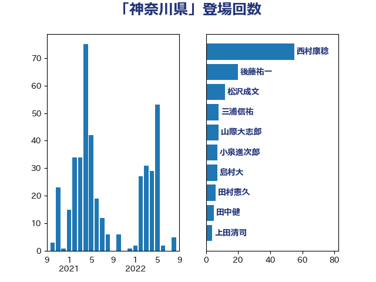

単語「神奈川県」

| 西村康稔 | 自由民主党 | 55 回 |
| 後藤祐一 | 立憲民主党 | 20 回 |
| 松沢成文 | 日本維新の会 | 12 回 |
| 三浦信祐 | 公明党 | 8 回 |
| 山際大志郎 | 自由民主党 | 8 回 |
| 小泉進次郎 | 自由民主党 | 7 回 |
| 島村大 | 自由民主党 | 7 回 |
| 田村憲久 | 自由民主党 | 6 回 |
| 田中健 | 国民民主党 | 5 回 |
| 上田清司 | 国民民主党 | 4 回 |
| 太栄志 | 立憲民主党 | 4 回 |
| 浜口誠 | 国民民主党 | 4 回 |
| 菅義偉 | 自由民主党 | 4 回 |
| 鈴木敦 | 国民民主党 | 4 回 |
| 長浜博行 | 無所属 | 4 回 |
| 阿部知子 | 立憲民主党 | 4 回 |
| 丸川珠代 | 自由民主党 | 3 回 |
| 室井邦彦 | 日本維新の会 | 3 回 |
| 山田俊男 | 自由民主党 | 3 回 |
| 後藤茂之 | 自由民主党 | 3 回 |
| 斉藤鉄夫 | 公明党 | 3 回 |
| 池下卓 | 日本維新の会 | 3 回 |
| 赤羽一嘉 | 公明党 | 3 回 |
| 足立敏之 | 自由民主党 | 3 回 |
| こやり隆史 | 自由民主党 | 2 回 |
| 中山展宏 | 自由民主党 | 2 回 |
| 中野英幸 | 自由民主党 | 2 回 |
| 串田誠一 | 日本維新の会 | 2 回 |
| 伊藤俊輔 | 立憲民主党 | 2 回 |
| 加藤勝信 | 自由民主党 | 2 回 |
| 古屋範子 | 公明党 | 2 回 |
| 小林鷹之 | 自由民主党 | 2 回 |
| 山崎誠 | 立憲民主党 | 2 回 |
| 山本ともひろ | 自由民主党 | 2 回 |
| 山本博司 | 公明党 | 2 回 |
| 山本太郎 | れいわ新選組 | 2 回 |
| 川田龍平 | 立憲民主党 | 2 回 |
| 杉尾秀哉 | 立憲民主党 | 2 回 |
| 江田憲司 | 立憲民主党 | 2 回 |
| 河野太郎 | 自由民主党 | 2 回 |
| 石川大我 | 立憲民主党 | 2 回 |
| 福山哲郎 | 立憲民主党 | 2 回 |
| 萩生田光一 | 自由民主党 | 2 回 |
| 野田国義 | 立憲民主党 | 2 回 |
| 青木愛 | 立憲民主党 | 2 回 |
| おおつき紅葉 | 立憲民主党 | 1 回 |
| たがや亮 | れいわ新選組 | 1 回 |
| 三谷英弘 | 自由民主党 | 1 回 |
| 中村裕之 | 自由民主党 | 1 回 |
| 中根一幸 | 自由民主党 | 1 回 |
| 中谷一馬 | 立憲民主党 | 1 回 |
| 伊佐進一 | 公明党 | 1 回 |
| 伊藤孝恵 | 国民民主党 | 1 回 |
| 佐藤英道 | 公明党 | 1 回 |
| 勝部賢志 | 立憲民主党 | 1 回 |
| 古川直季 | 自由民主党 | 1 回 |
| 和田政宗 | 自由民主党 | 1 回 |
| 塩崎彰久 | 自由民主党 | 1 回 |
| 塩川鉄也 | 日本共産党 | 1 回 |
| 塩田博昭 | 公明党 | 1 回 |
| 大島敦 | 立憲民主党 | 1 回 |
| 大西健介 | 立憲民主党 | 1 回 |
| 宮本徹 | 日本共産党 | 1 回 |
| 小沢雅仁 | 立憲民主党 | 1 回 |
| 小野泰輔 | 日本維新の会 | 1 回 |
| 山本香苗 | 公明党 | 1 回 |
| 岬麻紀 | 日本維新の会 | 1 回 |
| 平木大作 | 公明党 | 1 回 |
| 後藤田正純 | 自由民主党 | 1 回 |
| 斎藤嘉隆 | 立憲民主党 | 1 回 |
| 早坂敦 | 日本維新の会 | 1 回 |
| 早稲田ゆき | 立憲民主党 | 1 回 |
| 木村英子 | れいわ新選組 | 1 回 |
| 本村伸子 | 日本共産党 | 1 回 |
| 東徹 | 日本維新の会 | 1 回 |
| 松川るい | 自由民主党 | 1 回 |
| 柚木道義 | 立憲民主党 | 1 回 |
| 梅村みずほ | 日本維新の会 | 1 回 |
| 河西宏一 | 公明党 | 1 回 |
| 浜野喜史 | 国民民主党 | 1 回 |
| 渡辺周 | 立憲民主党 | 1 回 |
| 田村智子 | 日本共産党 | 1 回 |
| 田村貴昭 | 日本共産党 | 1 回 |
| 石田昌宏 | 自由民主党 | 1 回 |
| 笠井亮 | 日本共産党 | 1 回 |
| 美延映夫 | 日本維新の会 | 1 回 |
| 自見はなこ | 自由民主党 | 1 回 |
| 葉梨康弘 | 自由民主党 | 1 回 |
| 藤木眞也 | 自由民主党 | 1 回 |
| 西岡秀子 | 国民民主党 | 1 回 |
| 西田昭二 | 自由民主党 | 1 回 |
| 金村龍那 | 日本維新の会 | 1 回 |
| 鈴木庸介 | 立憲民主党 | 1 回 |
| 長峯誠 | 自由民主党 | 1 回 |
| 高橋千鶴子 | 日本共産党 | 1 回 |